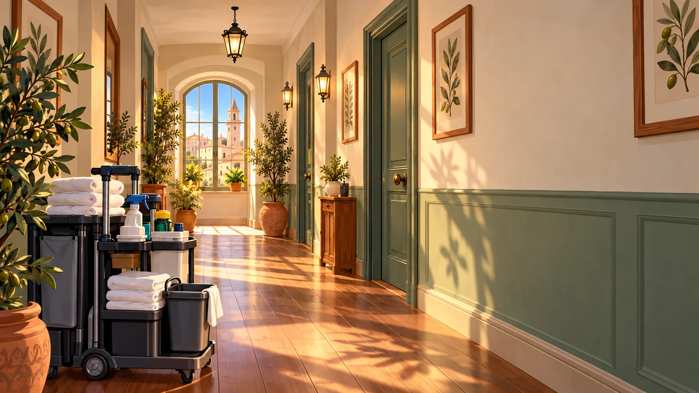

BNBReady · Programma della giornataLe pulizie di oggi
09:30Camera 1 · Dopo il checkout
11:00Camera 2 · Preparazione arrivo
✓ Programma ricevuto
Un soggiorno smart · BNBReadyIl lavoro della giornata
Host e collaboratori coordinati
Un soggiorno smartChi prepara le camere sa già come organizzarsi.